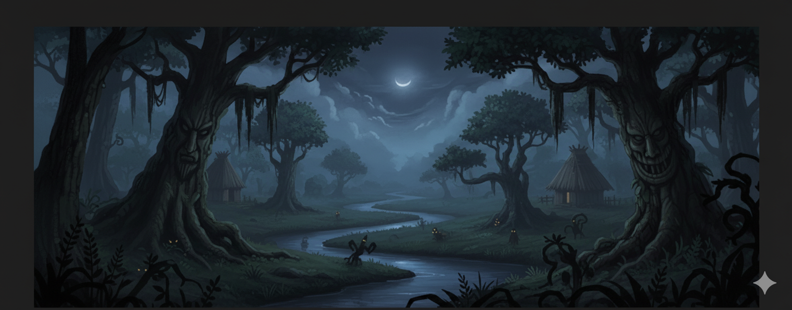
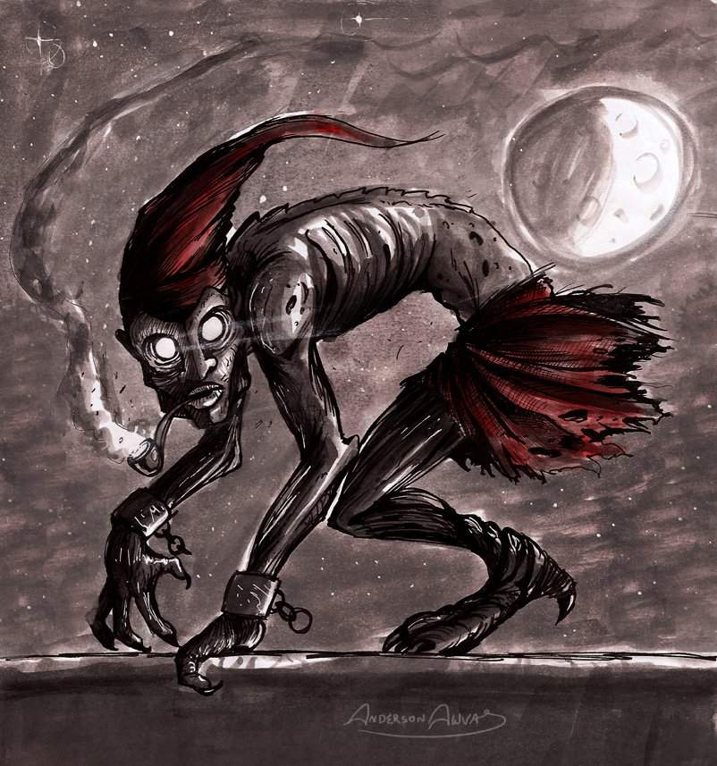
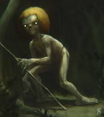
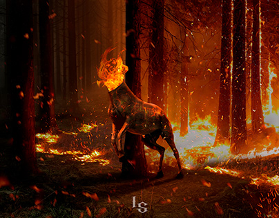

Origens
O Saci tem raízes indígenas e africanas, simbolizando a malícia e a liberdade. No interior de São Paulo, ele é invocado em rodas de prosa.
O folclore brasileiro é rico em lendas que misturam influências indígenas, africanas e europeias. Elas contam histórias de seres míticos que habitam nossas florestas, rios e sertões.
Uma figura travessa do folclore caipira, representado por um menino de uma perna só, com gorro vermelho e cachimbo.
O Saci é conhecido por pregar peças, como esconder objetos ou bagunçar casas.
Guardião das florestas amazônicas, com pés virados para trás para confundir caçadores.
Ele pune quem destrói a natureza, ecoando lições ambientais.
Sereia dos rios brasileiros que encanta pescadores com sua voz.
Sua lenda vem de povos indígenas e reflete o mistério das águas.
Uma criatura que aterroriza o interior, sendo uma mulher amaldiçoada por se envolver com um padre. Ela solta fogo pelo pescoço.
Ela aparece nas noites de quinta-feira, deixando um rastro de medo e destruição.
Um homem tão cruel e malvado em vida que foi rejeitado por Deus e pelo Diabo após a morte. Agora, ele vagueia entre os vivos, ressecado e em busca de vingança.

Seus abraços são mortais e sua aparição é sinal de maldição no local.